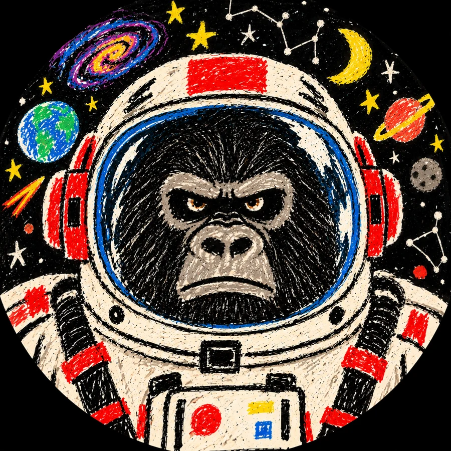

The SpaceGorilla
Un gorila viaja entre estrellas, recoge fragmentos de mundos y los convierte en dibujos, objetos y pequeñas historias.
Este viajero es un personaje de ficción. La persona que crea está un poco más abajo, en la Tierra.

Nacho Martínez
Artista visual · Cerámica, pintura e ilustración · Docencia artística.
Trabajo entre la pintura, la escultura, la cerámica, la fotografía y la ilustración. En mi trayectoria, la pintura y el videoarte han servido para expresar sentimientos y explorar lo cotidiano mediante figuras, patrones y motivos abstractos.
Dirijo O Raposo Púrpura, en A Coruña, desde septiembre de 2022. Es un taller de pintura y cerámica donde la creación individual convive con el aprendizaje práctico y el encuentro social. Acompaño a personas de distintas edades en sus propios proyectos.
Currículum
Experiencia
- 2022–hoy
Dirección y docencia · O Raposo Púrpura
Profesional autónomo. Gestión del taller, programación de pintura y cerámica, atención al público, orientación técnica individualizada, organización de materiales y comunicación digital. A Coruña; desde septiembre de 2022.
- 2014
Restauración de arte
Santa Cristina, A Coruña. Marzo–septiembre.
Formación
- 2020–2022
Cerámica
EASD Pablo Picasso
- 2014–2016
Escultura · Forja artística
EASD Pablo Picasso
- 2012–2014
Bellas Artes
Facultad de Bellas Artes de Pontevedra · Estudios no finalizados
- 2011–2012
Iniciación al Arte Contemporáneo
Fundación Luis Seoane
- 2007–2011
Bachillerato Artístico
IES Adormideras
Exposiciones, proyectos y actividades · 2010–2026
- 2026
Estudios Abertos · O Raposo Púrpura
Participación los días 6 y 7 de junio, con pintura y escultura y una activación DJ set. Artistas invitados: Antía Warncke (cerámica y fotografía), Laura Reimúndez (pintura), Blanca Casarío (mural y pintura), Navia Coimbra (pintura), Abel García Pantín (instalación), Ara Romero (collage) y Paloma Rodríguez (ilustración).
- 2022
Taller Justicia · Studio Follow
Exposición del 19 al 23 de enero, junto a Antón L. Bazarra, Laura Pazos y Richy Veiga.
- 2021
Mil pequenos peixes brancos, coma se fervera a cor da auga
Exposición colectiva en Kiosco Alfonso y PALEXCO, A Coruña. Del 11 de marzo al 17 de mayo; comisariada por Leticia Castromil.
- 2020
Zoótropo · Creación audiovisual
Beca de creación audiovisual del Concello da Coruña. Proyecto colaborativo.
- 2019
Tolerancia e diversidade
Exposición solidaria de Amnistía Internacional en A Coruña, noviembre de 2019.
- 2019
Festival de Mural
Seleccionado para el festival, mayo de 2019.
- 2019
Café Valentín
Exposición, mayo de 2019.
- 2018
Tras la puerta del garaje
Exposición colectiva en Taller Justicia con Laura Pazos, Antón López Bazarra y Olalla Franco. Organizada por Sen Ánimo de Nome, noviembre de 2018.
- 2018
Loop · Bomoble
Exposición individual en Bomoble, del 2 al 28 de febrero.
- 2017
3ES3 · Fórum Metropolitano
Exposición colectiva junto a Olalla Franco y Pedro Silva Opazo.
- 2017
Pulpeira As Redes
Exposición individual.
- 2017
Estudios Abertos
Participación en las jornadas de estudios abiertos del Concello da Coruña.
- 2016
Mail art
Participación en un proyecto internacional de arte postal y en mercadillos de arte.
- 2016
Cabaret Místico y taller social
Formación complementaria con Alejandro Jodorowsky en el Teatro Colón, A Coruña. 5 y 6 de febrero.
- 2015
O valor do tempo · Plataforma14
Exposición colectiva de escultura. Del 11 al 28 de septiembre, A Coruña.
- 2010
Circo de Artesanos
Primera exposición individual, A Coruña. Del 21 de octubre al 16 de noviembre.
Otras actividades recogidas en mi trayectoria: X Feria de Arte Gallego y colaboración pictórica con Xiz Montealto.
Hablemos de arte
Obra, proyectos y colaboraciones: @nachommmartinez.
Para el taller O Raposo Púrpura: oraposopurpura@gmail.com · +34 666 550 380.